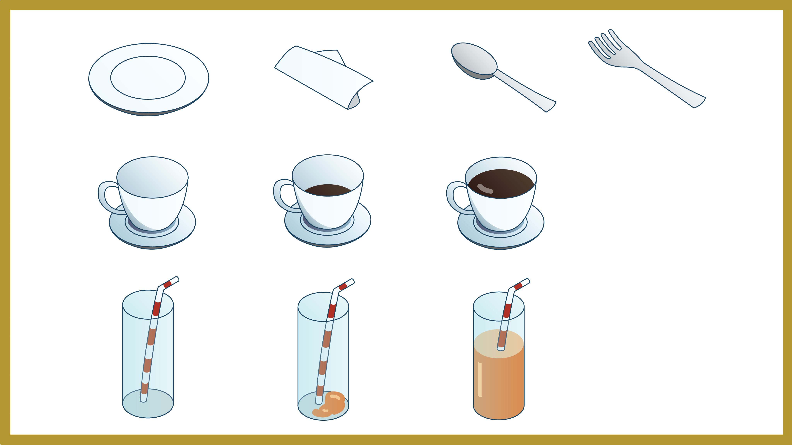
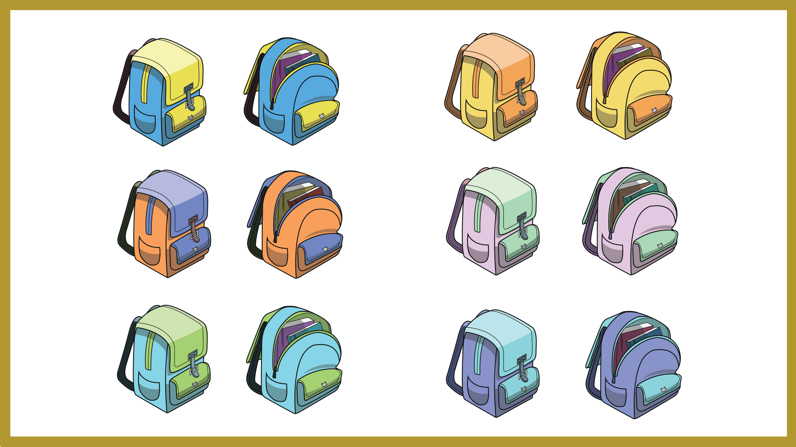

Creating Game Assets
I was mainly responsible for the design of game assets using Illustrator. Some of these included restaurant cutlery,
schoolbags for the avatar, as well as icons corresponding to the theme of each level.


Video Editing
Next, I also helped to overlay the voice-overs on the animation. Sometimes, when the audio speed
does not match the animation, I either adjust it, or take note of the specific lines to be re-recorded.
I was also responsible for checking for any glitches, standardizing the audio volume, and laying subtitles.
Game Testing
Finally, I was also given the opportunity to play test the game in its early stages. During the play testing,
I kept a lookout on factors such as clarity of information and ease of user navigation, which would impact
user experience. Secondary factors included background music.